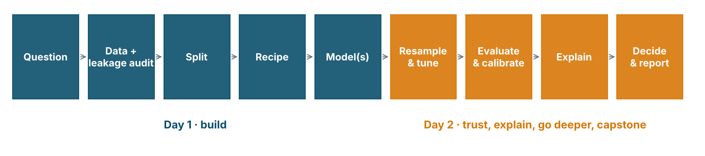
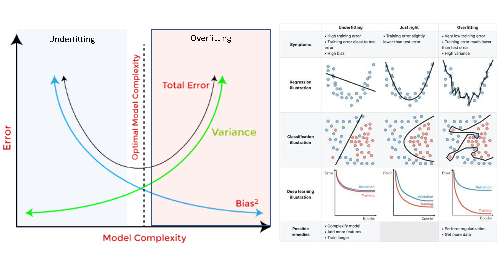
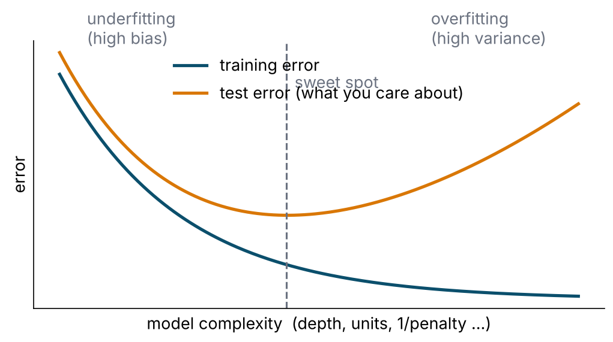
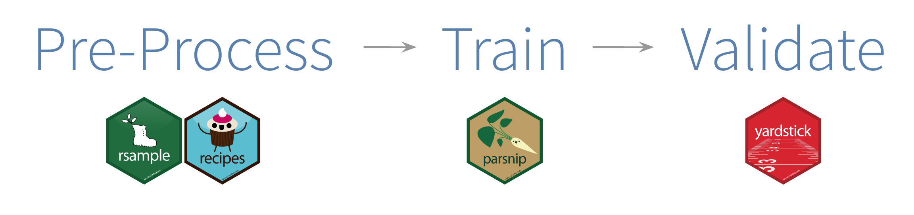
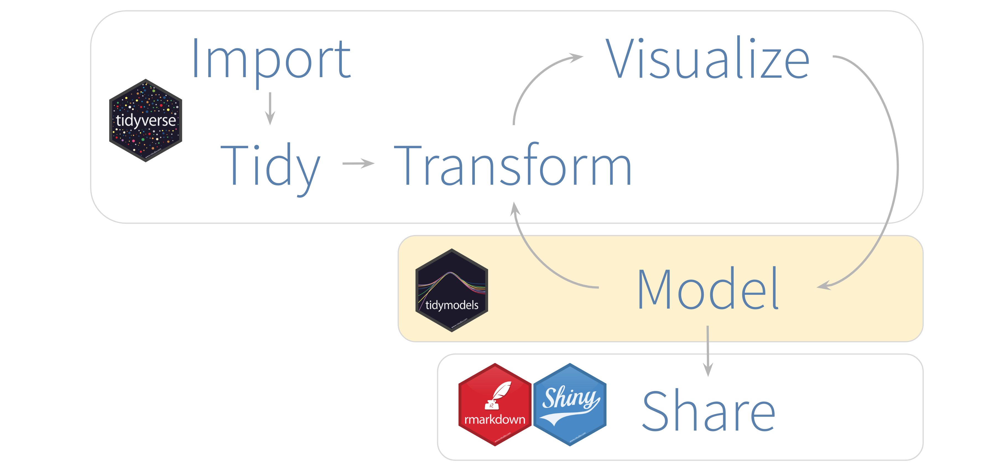

Have you fitted a logistic regression in R before?
Have you fitted any machine-learning model before?
Were you at last week’s Refresher Course?
Prerequisite: you can read a dplyr pipe and a ggplot. Everything else we build today.
What you will be able to do by 5 pm tomorrow
Explain the difference between a model that explains and a model that predicts — and validate each correctly.
Build a leak-free pipeline in tidymodels: split → recipe → workflow → resample.
Fit, compare and tune four model families — random forests, support vector machines, XGBoost and neural networks — against the logistic regression you already know.
Evaluate a classifier the way a clinician needs it evaluated — and choose a decision threshold on purpose.
Explain a model globally and locally, and know what the explanation does not mean.
Do all of it yourself: every session ends with you writing code, and every session has a self-guided tutorial you can redo at home.
How the two days are built

Every session: a short lecture → live coding → your turn.
Day 1 builds the pipeline and two model families. Day 2 adds the third, teaches you to validate, tune, evaluate and explain, and ends with neural networks.
Materials: one tutorial per session (tutorials/) with everything we type, the outputs, the exercises and their solutions — the same pages will stay online.
The agenda
Day 1 · Wednesday 11 Nov · Build
Time
Session
09.00
Welcome · S1 Learning how the machine learns
10.50
S2 The pipeline: split, recipe, workflow, leakage · Tutorial 1
14.00
S3 Decision trees and random forests · Tutorial 2
15.50
S4 Support vector machines · Tutorial 3
Day 2 · Thursday 12 Nov · Trust, then go deeper
Time
Session
09.15
S5 Gradient boosting and XGBoost · the bake-off · Tutorial 4
10.50
S6 Resampling and tuning · Tutorial 5
11.50
S7 Evaluation, calibration and explanation · Tutorial 6
14.00
S8 Neural networks, parts 1 and 2 · Tutorial 7
16.40
Verdict · the reveal · where next
Tea 10.30 and 15.30 · Lunch 13.00 · Minute-by-minute timings on the Agenda page of the workshop site (agenda.qmd).
House rules
Type along during demos. You will break things. That is the fastest way to learn the error messages.
Stuck > 5 min → raise a hand. Helpers are here for exactly that.
Pairs for the Your turn blocks.
Phones: on. ChatGPT/Claude: allowed — but you must be able to explain every line you paste.
Wi-Fi is for packages, not for Netflix. Everything should already be installed from setup/.
Sociodemographics, lifestyle, anthropometry, family history
Clinic measurements: BP, random blood sugar, cholesterol
Three outcomes: undiagnosed diabetes / hypertension / high cholesterol
The question for both days: who has undiagnosed diabetes? Take-home challenge: who has undiagnosed hypertension?
It is synthetic. Simulated from plausible Malaysian risk gradients so that the models have something real to find — and so that, at the end of Day 2, we can open the simulator and check what they found. No row is a person. No number is an estimate of anything.
Why not real NHMS data? It is confidential, and the usual way of de-identifying it (scrambling each column) destroys the relationships between variables that a model has to learn.
What is machine learning, really?
A model is a function fitted to data
\[\hat{y} = f(x_1, x_2, \dots, x_p)\]
Logistic regression: \(f\) is a sigmoid of a weighted sum. You fit it by maximum likelihood.
A random forest: \(f\) is an average of 500 decision trees. You fit it by greedy splitting.
A neural network: \(f\) is a stack of weighted sums and squashes. You fit it by gradient descent.
Statistics and machine learning are the same activity with different priorities. ML optimises predictive accuracy on new data and lets the data choose the shape of \(f\). Classical modelling optimises interpretable, unbiased estimates of effects and chooses the shape of \(f\) by hand.
Explain or predict? Two different jobs
Explanatory (classical epi)
Predictive (this workshop)
Question
Does smoking cause higher risk?
Who, in this population, has it now?
Hero statistic
Odds ratio with CI, p-value
AUC, calibration, sensitivity at a threshold
Variable selection
DAG, confounding, parsimony
Whatever is available before the outcome and improves prediction
Validation
Model assumptions, residuals
Performance on unseen data
Overfitting
A nuisance
The central enemy
Interactions, non-linearity
Added by hand, if theory says so
Learned from data
A predictor does not have to be causal to be useful. A causal effect does not have to predict well. Keep the two jobs apart in your head and in your paper.
The supervised-learning contract
You have labelled examples: \((x_i, y_i)\) for \(i = 1 \dots n\).
You want a rule that maps new\(x\) → \(y\).
Classification: \(y\) is a category (undiagnosed DM: yes/no).
Regression: \(y\) is a number (HbA1c, length of stay).
The machine “learns” by adjusting the rule until it is wrong as rarely as possible on examples it has not seen.
Other kinds, not today:
Unsupervised: no \(y\) — clustering, dimension reduction (phenotypes, PCA).
Reinforcement: learn by reward (dosing policies; mostly research).
Generative / LLMs: learn to produce data; a story for another workshop.
Vocabulary — same thing, several names
In epidemiology
In machine learning
In tidymodels
exposure, covariate, independent variable
feature, input, predictor
predictor role
outcome, dependent variable
target, label, response
outcome role
estimation sample
training set
training(split)
validation sample
test set (held out, used once)
testing(split)
—
validation / assessment set (inside resampling)
assessment(fold)
coefficient
parameter, weight
learned by fit()
model settings (e.g. number of knots)
hyperparameter
tune()
fit the model
train, learn
fit(), fit_resamples()
apply the model
predict, score, infer
predict(), augment()
Where ML already works in health (and where it is oversold)
Working
Risk scores from routine data (readmission, deterioration, undiagnosed disease)
Day 1 = steps 1–5. Day 2 = steps 6–10. Step 11 = the last slide tomorrow.
The one idea that matters: bias and variance
Underfitting and overfitting

Tassopoulou 2019; Kaggle blog 2020
The curve that explains every hyperparameter

High bias: the model is too simple to capture the signal — bad on training and test data.
High variance: the model memorised the training data’s noise — great on training, bad on test.
Every tuning knob you meet (tree depth, mtry, penalty, hidden units, cost, k) moves you along this x-axis.
The one rule
Never evaluate a model on the data it was trained on.
Training error always goes down as the model gets more flexible. It tells you nothing about new patients. Every honest number in this workshop comes from data the model did not see: a held-out fold or the locked test set.
Corollaries you will see today:
A single train/test split is a noisy estimate → resample (Day 2, 9.15).
Anything estimated from data (imputation medians, scaling, SMOTE) must be estimated inside the training fold → recipes.
If it looks too good, it probably is: suspect leakage before celebrating.
tidymodels: one grammar for every model
Why not just call xgboost()?
You can. Then ranger() wants a formula, xgboost() wants a matrix, kernlab wants scaled numerics, every package returns predict() output in a different shape, and the confusion-matrix code gets copy-pasted four times with four different bugs.
tidymodels gives you:
one way to split (rsample)
one way to pre-process (recipes)
one way to specify a model and swap the engine (parsnip)
one object that bundles both (workflows)
one way to resample & tune (tune, dials, finetune)
one way to measure (yardstick, probably)
one way to compare many (workflowsets)

The map

Model → validate → tune → evaluate → communicate. Same loop as R4DS, with resampling inside “Model”.
R for Data Science, 2e
Anatomy of a parsnip model
rand_forest(mtry =6, trees =500, min_n =10) |># 1. model TYPE and its main hyperparametersset_engine("ranger") |># 2. which PACKAGE actually fits itset_mode("classification") # 3. classification or regression
The type names the method in a package-agnostic way: logistic_reg(), decision_tree(), rand_forest(), boost_tree(), svm_rbf(), mlp().
The engine is the implementation: "glm", "glmnet", "ranger", "xgboost", "kernlab", "nnet", "brulee".
The main arguments have the same names across engines (mtry is mtry whether ranger calls it mtry or xgboost calls it colsample_bynode).
Engine-specific extras go in set_engine("ranger", importance = "permutation").
Nothing is fitted yet. A specification is a plan.
The pipeline in six verbs
dm_split <-initial_split(dm_data, prop =0.8, strata = undx_dm) # 1. splitdm_rec <-recipe(undx_dm ~ ., data =training(dm_split)) |># 2. recipestep_impute_median(all_numeric_predictors()) |>step_dummy(all_nominal_predictors()) |>step_normalize(all_numeric_predictors())lr_wf <-workflow(dm_rec, logistic_reg() |>set_engine("glm")) # 3. workflowlr_res <-fit_resamples(lr_wf, vfold_cv(training(dm_split), v =5)) # 4. resamplecollect_metrics(lr_res) # honest estimatelr_last <-last_fit(lr_wf, dm_split) # 5. fit on train, score test ONCEcollect_metrics(lr_last) # 6. report
Twenty lines. By 11.50 you will have typed every one of them. By tomorrow 10.30 you will add tune() between steps 3 and 4 and nothing else changes.
If you learned tidymodels a few years ago — what changed
Then
Now
%>%
|> (native pipe; either works)
select_best(res, "roc_auc")
select_best(res, metric = "roc_auc") — positional is an error in tune ≥ 2.0
doParallel::registerDoParallel()
library(future); plan(multisession) — foreach is no longer supported
grid_latin_hypercube()
grid_space_filling() (old name still works)
step_string2factor()
convert to factors with mutate() before the split
finalize_model() + rebuild workflow
finalize_workflow()
copy-paste four model blocks
workflow_set() + workflow_map()
only shapviz on xgboost
kernelshap + shapviz on any model; DALEXtra for PDP/importance
—
probably for calibration and thresholds; finetune for racing
What “good” looks like when you write it up
TRIPOD+AI (Collins et al., BMJ 2024): the reporting checklist for prediction models — participants, predictors (and when they were available), outcome, sample size, missing data, model building, performance with calibration, fairness, code & data availability.
PROBAST+AI: risk-of-bias assessment; most published models fail on analysis (leakage, no calibration, optimistic validation).
We will tick TRIPOD+AI items as we go. If an item sounds like bureaucracy, it is usually the scar tissue of a model that hurt someone.
Next: Tutorial 1 (10.50)
Clean the codes (-9 is not a number)
Split with strata
Write a recipe and look inside it
Fit a logistic baseline through a workflow
Watch the AUC come out at 0.98 — and find out why that is bad news
Tea. Back at 10.50 with RStudio open on tutorials/01_pipeline.qmd.